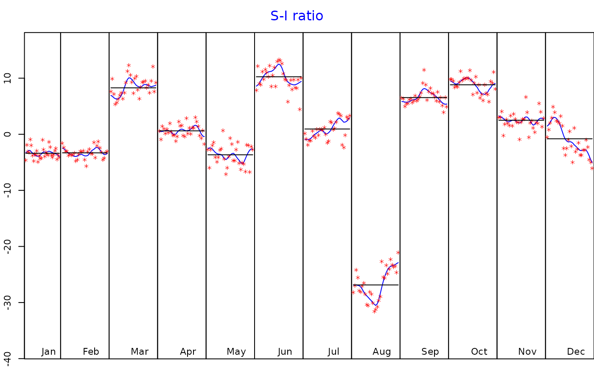
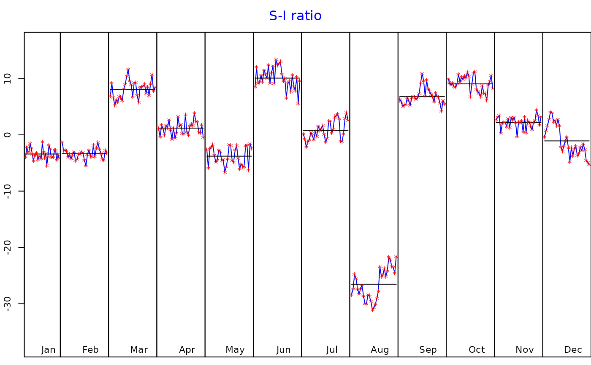

Function to print the decomposition model
Arguments
- x
the object to print.
- format
output format:
"latex"or"html".- plot
boolean indicating whether to plot or not the S-I Ratio.
- digits
number of digits after the decimal point.
- decimal.mark
the character to be used to indicate the numeric decimal point.
- booktabs
boolean indicating whether to use or not the booktabs package (when
format = "latex").- ...
arguments passed to
plot.decomposition_X11orplot.decomposition_SEATS.
Examples
ipi <- RJDemetra::ipi_c_eu[, "FR"]
jsa_x13 <- RJDemetra::jx13(ipi)
print_decomposition(jsa_x13, format = "latex")
#> \underline{\textbf{Decomposition (X-11)}}
#>
#> Mode: additive
#>

#>
#>
#> \begin{table}[H]
#> \centering
#> \caption{M-statistics}
#> \centering
#> \begin{tabular}[t]{lc>{\raggedright\arraybackslash}p{0.7\textwidth}}
#> \toprule
#> & Value & Description\\
#> \midrule
#> M-1 & 0.163 & The relative contribution of the irregular over three months span\\
#> M-2 & 0.089 & The relative contribution of the irregular component to the stationary portion of the variance\\
#> M-3 & 1.181 & The amount of period to period change in the irregular component as compared to the amount of period to period change in the trend\\
#> M-4 & 0.558 & The amount of autocorrelation in the irregular as described by the average duration of run\\
#> M-5 & 1.020 & The number of periods it takes the change in the trend to surpass the amount of change in the irregular\\
#> \addlinespace
#> M-6 & 0.090 & The amount of year to year change in the irregular as compared to the amount of year to year change in the seasonal\\
#> M-7 & 0.083 & The amount of moving seasonality present relative to the amount of stable seasonality\\
#> M-8 & 0.244 & The size of the fluctuations in the seasonal component throughout the whole series\\
#> M-9 & 0.062 & The average linear movement in the seasonal component throughout the whole series\\
#> M-10 & 0.272 & The size of the fluctuations in the seasonal component in the recent years\\
#> \addlinespace
#> M-11 & 0.256 & The average linear movement in the seasonal component in the recent years\\
#> Q & 0.368 & \\
#> Q-M2 & 0.402 & \\
#> \bottomrule
#> \multicolumn{3}{l}{\rule{0pt}{1em}\textbf{Final filters}: M3x5, Henderson-13 terms}\\
#> \end{tabular}
#> \end{table}
#>
#> \begin{table}[H]
#> \centering
#> \caption{Relative contribution of the components to the stationary portion of the variance in the original series, after the removal of the long term trend}
#> \centering
#> \begin{tabular}[t]{lc}
#> \toprule
#> & Component\\
#> \midrule
#> Cycle & 2.251\\
#> Seasonal & 59.750\\
#> Irregular & 1.067\\
#> TD \& Hol. & 2.610\\
#> Others & 33.718\\
#> \addlinespace
#> Total & 99.395\\
#> \bottomrule
#> \end{tabular}
#> \end{table}
# \donttest{
sa_ts <- RJDemetra::jtramoseats(ipi)
print_decomposition(sa_ts, format = "html")
#> <u><b>Decomposition (SEATS)</b></u>
#>
#> Mode: additive
#>

#>
#>
#> <b>Model</b>
#>
#> AR: $1+0.403B+0.288B^{2}$
#>
#> D: $1-B-B^{12}+B^{13}$
#>
#> MA: $1-0.664B^{12}$
#>
#>
#>
#> <b>SA</b>
#>
#> AR: $1+0.403B+0.288B^{2}$
#>
#> D: $1-2.000B+B^{2}$
#>
#> MA: $1-0.970B+0.006B^{2}-0.006B^{3}+0.004B^{4}$
#>
#> Innovation variance: 0.704
#>
#> <b>Trend</b>
#>
#>
#>
#> D: $1-2.000B+B^{2}$
#>
#> MA: $1+0.034B-0.966B^{2}$
#>
#> Innovation variance: 0.061
#>
#> <b>Seasonal</b>
#>
#>
#>
#> D: $1+B+B^{2}+B^{3}+B^{4}+B^{5}+B^{6}+B^{7}+B^{8}+B^{9}+B^{10}+B^{11}$
#>
#> MA: $1+1.329B+1.106B^{2}+1.185B^{3}+1.068B^{4}+0.821B^{5}+0.632B^{6}+0.404B^{7}+0.245B^{8}+0.002B^{9}-0.056B^{10}-0.204B^{11}$
#>
#> Innovation variance: 0.043
#>
#> <b>Transitory</b>
#>
#> AR: $1+0.403B+0.288B^{2}$
#>
#>
#>
#> MA: $1-0.260B-0.740B^{2}$
#>
#> Innovation variance: 0.053
#>
#> <b>Irregular</b>
#>
#>
#>
#>
#>
#>
#>
#> Innovation variance: 0.203
#>
#>
#>
#> <table class="table" style="margin-left: auto; margin-right: auto;">
#> <caption>Relative contribution of the components to the stationary portion of the variance in the original series, after the removal of the long term trend</caption>
#> <thead>
#> <tr>
#> <th style="text-align:left;"> </th>
#> <th style="text-align:center;"> Component </th>
#> </tr>
#> </thead>
#> <tbody>
#> <tr>
#> <td style="text-align:left;"> Cycle </td>
#> <td style="text-align:center;"> 6.087 </td>
#> </tr>
#> <tr>
#> <td style="text-align:left;"> Seasonal </td>
#> <td style="text-align:center;"> 80.528 </td>
#> </tr>
#> <tr>
#> <td style="text-align:left;"> Irregular </td>
#> <td style="text-align:center;"> 0.965 </td>
#> </tr>
#> <tr>
#> <td style="text-align:left;"> TD & Hol. </td>
#> <td style="text-align:center;"> 3.590 </td>
#> </tr>
#> <tr>
#> <td style="text-align:left;"> Others </td>
#> <td style="text-align:center;"> 8.102 </td>
#> </tr>
#> <tr>
#> <td style="text-align:left;"> Total </td>
#> <td style="text-align:center;"> 99.271 </td>
#> </tr>
#> </tbody>
#> </table>
# }